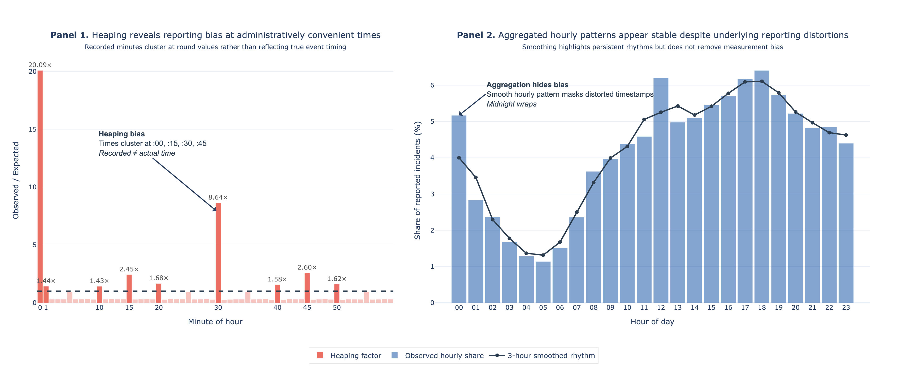

Assignment 2 Data Story
Bias in Crime Data
Data Story on how reporting choices and summary methods introduce bias, illustrated using San Francisco Police Department crime incident data from 2003 to 2025.
In this short data story we explore the insight of biases in the San Francisco Police Department (SFPD) crime data (from DataSF), how they arise, if they are inherent or introduced by us as analysts designing bad plots, and how to mitigate them. We focus on three key issues that we found when working with this dataset. There could be more, but we think these are the most important ones. To visualize these issues, we use a merged dataset of SFPD incident reports for 2003–2025 (see references). Each row is a recorded report with an identifier, timestamp, police district, crime category, and latitude/longitude. For clarity we reduced the number of crime categories to 13 and districts to 11. These are administrative records of reports and not direct measures of underlying crime. That distinction matters: timestamps, city‑level averages, and seemingly neutral summaries can mislead unless we account for how the data were collected and aggregated (measurement/reporting biases and aggregation effects). In the three following sections below we illustrate these issues and show more robust reading strategies: Section A: Minute‑level timestamps often reflect administrative rounding rather than behavior Section B: Citywide averages can hide substantial district‑level divergence Section C: Robust summaries and interactive comparison reduce interpretation risk.
Section A
The Clock Looks Precise, But It Isn’t
Heaping Reveals Measurement & Reporting Bias
Reporting Heaps: Minute-Level Rounding in Incident Times

Panel 1 shows a clear pattern: recorded times are rounded. Instead of a flat distribution, there are strong spikes at :00, :15, :30, and :45, with smaller peaks every five minutes. In practice, exact timestamps are rarely known. Victims and witnesses estimate. Police officers approximate. Data-entry systems favor quick input. The result is heaping: times cluster at regular intervals and create a false sense of precision. This is called measurement bias or reporting bias. The recorded time is not the true event time. Tt is a simplified version of it. When we zoom out to the hourly level in Panel 2, the data looks much cleaner. There is a stable daily rhythm. Some categories peak during the day, others at night. After smoothing, the pattern appears consistent and structured. However, this stability is misleading. Aggregation does not fix the problem, it hides it. The rounding noise at the minute level does not disappear but it gets averaged out. What remains looks like a natural rhythm, even though the underlying timestamps are distorted. For example, crime appears to increase in the afternoon and evening. But this pattern reflects both when incidents occur and when they are reported. This is where interpretation becomes difficult. There is another layer of bias: when events are observed and recorded. Crime data does not only reflect when incidents happen. It reflects when people interact with the system. During business hours, reports tied to institutions, such as fraud or administrative cases, cluster around midday. Evening and nighttime incidents, such as assaults or robberies, appear later. These patterns are shaped not only by behavior, but also by reporting habits, patrol schedules, and workload. In other words, the data captures activity in the system, not just activity in the real world. Panel 2 and the dataset treats time as linear, whereas in the real world we measure it circular. Because of this 23:00 appears to be far from Midnight and not close, how it is supposed to be. This “wrap” can distort averages by spiking incidents at midnight and inflate variability, especially for nighttime activity. However we can compromise this tradeoff by using circular time features (e.g. sin/cos transforms) that preserve the wrap-around structure of time, and by applying smoothing or debiasing methods to mitigate the impact of heaping. Additionally, we need to be careful when fitting data-driven models, as using to small discretizations steps can lead to models reflecting reporting artifacts rather than true signals. Key Takeaway We saw that recorded incidents are not ground truth. They are records of interactions with a reporting system. Using minute-level timestamps with this dataset is showing administrative habits. However its hourly patterns reflect both behavior and observation. The differences across time or place may reflect reporting intensity as much as actual crime and has a direct consequences for analysis. If we were to use data-driven models, trained on raw (minute) timestamps, we could end up learning rounding patterns instead of real signals. For example, a model might learn that crimes happen at :00 or :30, not because they do, but because that is how they are recorded.
Section B
The Average City Does Not Exist
Consequences of Aggregation Bias & Enforcement Effects
Aggregation Bias and Enforcement Effects in San Francisco Drug Offense Reports (2003–2025)
Panel A shows San Francisco’s city-level polynomial trend, indicating a modest uptick in reported drug offenses since 2021. However, this aggregate trend masks substantial spatial and temporal heterogeneity (i.e. aggregation bias). On its own, it is difficult to interpret whether this increase is widespread across districts or driven by a small subset of areas. Panel B’s percent-share heatmap reveals these divergent district trajectories (e.g. the Tenderloin’s rising share versus declines elsewhere). The visualization highlights that district-level trends are heterogeneous, and that the apparent citywide stability is the result of averaging opposing local dynamics. Importantly, the Tenderloin’s increasing share may reflect a true rise in underlying activity, but it could also be driven by increased policing intensity or reporting practices (i.e. enforcement effects). Furthermore, since 2021, reported Drug Offenses have risen in ways that may reflect shifts in policy and enforcement tied to the opioid crisis rather than only higher prevalence. For example, large fentanyl seizures and a surge in drug-related citations and arrests in 2023–2024 around the Tenderloin could drive up recorded incidents and warrants (see California opioid crisis). Panel C combines a district-level choropleth with street-level density, revealing pronounced intra-district clustering and concentration along district boundaries. These patterns show that even district-level aggregates obscure meaningful within-district variation. For example, districts adjacent to the Tenderloin (a known drug market hotspot), such as Northern, exhibit elevated incident counts near shared borders, while other parts of the same district show relatively low activity. This illustrates that crime is highly localized, and aggregation at the district level can conceal these fine-grained spatial patterns. Taken together, raw counts are descriptive but not causal. Drawing causal inferences requires accounting for exposure, enforcement, and uncertainty. Moving from observed reports to causal claims necessitates additional data on enforcement practices (e.g. patrol allocation, response activity) and community reporting behavior. To reduce this risk of misinterpretation, as mentioned above by normalizing counts and including exposure measures, and showing disaggregated views (e.g. small multiples of district time series paired with maps) or revealing trends by using hierarchical models that include time-varying enforcement covariates. Key Takeaway We showed that aggregation is flattening critical variation. For example, a twofold increase in a district’s share does not necessarily imply a doubling of underlying criminal activity, as it may instead reflect changes in reporting or policing intensity. Thus, aggregated views should be treated as a starting point and then disaggregated to understand where and why patterns differ. Additionally, counts (e.g. Panel A) should be contextualized with shares, rates, and spatial distributions. Next time, if possible, we should also pair reported incidents with enforcement data to help better distinguish true prevalence changes from reporting or enforcement effects. Finally, when building predictive models or fitting a trendline, we need to be cautious about relying solely on raw counts since models may otherwise learn reporting artifacts rather than underlying signals.
Section C
Simple Plots to Reduce Bias
Using simple tools to accurately interpret district-level crime patterns
Daily Incident Counts: Distributions and Mean-Median Gaps reveal high-crime districts
City-level averages are easy to read, but they can be misleading when distributions are skewed. With the figure above, we address that problem using a guided layout: one default comparison plus a small set of summaries. For the analysis we focus on 2025 and use the median. In Panel 1, Southern is clearly above the city reference at about 1.6, while Park and Richmond are far below at roughly 0.43. Even before interacting, the figure shows district differences. But this first comparison is only a starting point. As shown in Section B, a single summary metric can hide whether a district’s value reflects typical days or a few extreme days. Panel 2 adds the missing context by showing distributions for all districts. Southern is not only high on average, its distribution is broader and extends further upward, indicating more day-to-day volatility and a heavier upper tail. Richmond and Park are also elevated, but their distributions are much tighter and more centered than Southern's. This matters because two districts can have similar central summaries (e.g. mean or median) yet differ greatly in the risk of high-incident days. By showing spread in Panel 2, we avoid overconfident interpretations based on a single bar in Panel 1. For example, if we only looked at the mean in Panel 1, we might conclude that the neighboring districts Tenderloin and Northern (both about 1.28 above the city median) have similar risk profiles. Panel 2 shows Tenderloin has a much wider distribution and a heavier upper tail than Northern, so Tenderloin has a higher potential for high-incident days. Panel 3 quantifies skew directly using the mean–median gap. Richmond has the largest positive gap (~12%), Tenderloin and Mission are about 6% each, indicating their means are pulled upward by occasional spikes. Southern, by contrast, appears near 1.9% and has one of the smallest gaps. That is important for interpreting Panels 1 and 2: Southern’s high level in Panels 1 and 3 suggests structural elevation rather than a single outlier. However, Panel 2's wider distribution for Southern complicates that view. This example shows that no single summary captures the full story and that combining plots and metrics gives a clearer picture. Bayview provides a useful contrast. In Panel 1 it sits close to the city average (~0.93), Panel 2 shows a tighter distribution, and Panel 3 has a mean–median gap near zero. Together, these suggest Bayview’s level is relatively stable and not driven by outlier days. In other words, districts differ not only in level but also in how reliable a given summary is. Final Takeaway To sum up: In Section A we showed that minute-level timestamps are often rounded, highlighting measurement bias in how the data is recorded. Section B explored how citywide averages can hide very different district trajectories (e.g. Tenderloin, where enforcement shifts may drive reported increases). Lastly, in this section we demonstrated that using simple plots such as median, distributions, and mean–median gaps together (and checking them interactively) can help reduce aggregation bias and reveal skewness, seperating robust patterns from spike-driven artifacts that aggregated summaries could hide. For this data story, we conclude that we should not rely on a single summary or visualisation, as this can reinforce aggregation bias and mislead interpretations of crime patterns. Instead, we should test multiple summaries, examine distributions, and explicitly check for for skewness in daily incident counts. Finally, we should always be aware of possible reporting and measurement biases, as well as enforcement effects (e.g. changes in policing practices, reporting behavior, or policy changes) that affect how incidents are recorded across districts when plotting data. We should therefore not solely base our interpretations on aggregates when drawing conclusions about crime levels or risk in different districts.
References: Segel & Heer (2010) — "Narrative Visualization", Richardson et al. .
Data source 1: SFPD incident reports (Historical, 2003–2018)
Data source 2: SFPD incident reports (2018–Present)
Assignment repository: github.com/klfl1012/klfl1012.github.io